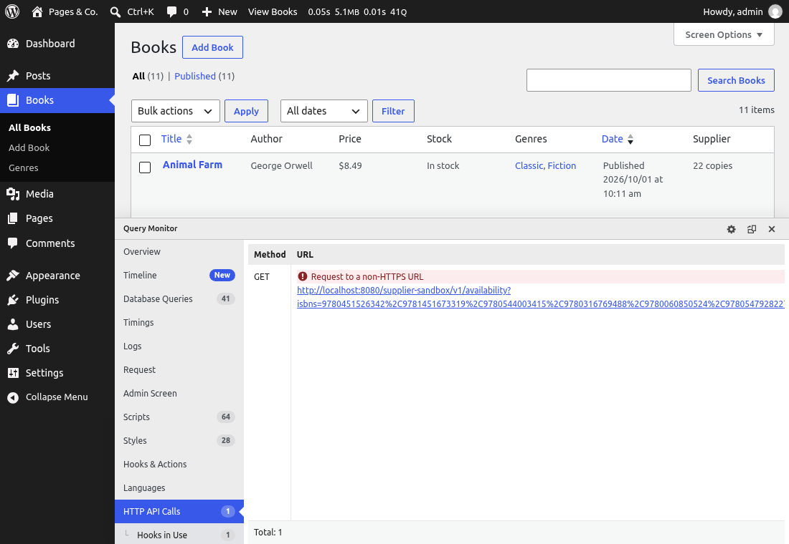

🧪 Lesson 8.1: Debugging & Testing
The Pages & Co. plugin now has twenty features, three blocks, its own REST API, a supplier client and a nightly job. Every lesson so far checked its own work by hand, once. That stops scaling about now: a change to the supplier client could quietly break the daily sync, and nobody would click through every screen to notice. This lesson gives you the professional's two habits. When something goes wrong, find out why with evidence instead of guesses: the debug log, backtraces, recovery mode and Query Monitor. And before anything goes wrong, let machines check the code for you: PHPUnit tests that run the plugin inside a real WordPress, and PHPCS with the WordPress Coding Standards.
🎯 Learning Objectives
By the end of this lesson, you will be able to:
- Configure
WP_DEBUG, the debug log and error display for development and production, and keep the log private - Trace a problem with
error_log(), hooks such ashttp_api_debuganddoing_it_wrong_run, andwp_debug_backtrace_summary() - Recover from a fatal error with recovery mode and WP-CLI's
--skip-plugins, and use Query Monitor to look inside a request - Write PHPUnit integration tests with
WP_UnitTestCase, factories andpre_http_request, and run them in a wp-env test environment - Set up PHPCS with the WordPress Coding Standards for a plugin, fix what it finds, and justify the exceptions with a ruleset or
phpcs:ignore
In This Lesson
🔦 The Debugging Toolbox
Debugging is detective work: a symptom ("the Supplier column says not reachable"), a list of suspects, and evidence that rules them out one by one. The worst habit is changing code until the symptom disappears; the best is making the program tell you what it is doing. Since Lesson 1.2 your site has had WordPress's debug settings on. Here is what each one does, and what your site has (from the WP-CLI container):
wp eval 'foreach ( array( "WP_DEBUG", "WP_DEBUG_LOG", "WP_DEBUG_DISPLAY", "SCRIPT_DEBUG" ) as $name ) { printf( "%-17s %s\n", $name, var_export( constant( $name ), true ) ); } printf( "%-17s %s\n%-17s %s\n", "environment", wp_get_environment_type(), "error_log", ini_get( "error_log" ) );'Output
WP_DEBUG true
WP_DEBUG_LOG true
WP_DEBUG_DISPLAY true
SCRIPT_DEBUG true
environment local
error_log /var/www/html/wp-content/debug.log| Constant | Does | Local | Production |
|---|---|---|---|
WP_DEBUG | reports all PHP errors, notices and deprecations, plus WordPress's "called incorrectly" and "deprecated" notices | true | false (or true with display off, to log) |
WP_DEBUG_LOG | true: write them to wp-content/debug.log; a path: write them there | true | a path outside the web root, if you log at all |
WP_DEBUG_DISPLAY | print them into the page (display_errors) | true | false, always |
SCRIPT_DEBUG | load core's unminified JavaScript and CSS (readable stack traces in the browser) | true | false |
WP_ENVIRONMENT_TYPE | local, development, staging or production; read with wp_get_environment_type() | local | production (the default) |
WP_DEBUG_DISPLAY prints errors into pages, which helps you and harms visitors: messages break layouts and JSON, and they reveal file paths and code to anyone. On a live site errors go to a log only, if anywhere (Lesson 8.4 sets that up), and Common Mistake 1 shows why the default log location needs care.
A case: "Supplier not reachable"
A colleague edits wp-config.php and, a few minutes later, the Books screen says the supplier is not reachable. Reproduce the situation (a one-character typo in the key) and look:
wp config set PAGESCO_BOOKS_SUPPLIER_KEY 'sandbox-7f3a9d'
wp transient delete pagesco_books_supplier_availabilityOutput
Success: Updated the constant 'PAGESCO_BOOKS_SUPPLIER_KEY' in the 'wp-config.php' file with the value 'sandbox-7f3a9d'.
Success: Transient deleted.http://localhost:8080/wp-admin/edit.php?post_type=book&orderby=title&order=asc (the first Supplier cell)Output
Supplier not reachableEvidence 1: what the code already recorded. Lesson 7.3's Availability stores the error message in its transient, which is exactly the place to look first:
wp eval 'echo get_transient( "pagesco_books_supplier_availability" )["error"], "\n";'Output
The supplier answered 401: Send a valid API key in the X-Api-Key header.A 401: the supplier did not accept the key. When the stored message is not enough, make the code talk. error_log() writes a line to the debug log (with WP_DEBUG_LOG on); wp_json_encode() or print_r( $value, true ) turn arrays into text for it. A temporary must-use plugin that logs every outgoing HTTP request with the http_api_debug action from Lesson 7.3:
<?php
/**
* Plugin Name: Pages & Co. Debug: HTTP requests (temporary)
*/
add_action(
'http_api_debug',
function ( $response, $context, $transport, $args, $url ) {
$key = $args['headers']['X-Api-Key'] ?? '';
error_log(
sprintf(
'HTTP %s %s, key %s, answer %s',
$args['method'],
strtok( $url, '?' ),
'' === $key ? 'none' : substr( $key, 0, 8 ) . '…',
is_wp_error( $response ) ? $response->get_error_message() : wp_remote_retrieve_response_code( $response )
)
);
},
10,
5
);Notice what it does not log: the whole key. A log is read by more people, and lives longer, than the code that wrote it; the first eight characters are enough to compare. Open the Books screen again (the failure is cached for five minutes, so delete the transient first) and read what the request added to debug.log:
wp transient delete pagesco_books_supplier_availabilityOutput
Success: Transient deleted.http://localhost:8080/wp-admin/edit.php?post_type=book (then: tail wordpress/wp-content/debug.log)Output (the new lines of wp-content/debug.log)
[26-Oct-2026 04:36:30 UTC] HTTP GET http://localhost:8080/supplier-sandbox/v1/availability, key sandbox-…, answer 401Right URL, a key is sent, the supplier answers 401: so the key is wrong, not the address, the network or the code. wp config get shows it, and the fix is one command. Then remove the temporary plugin: debugging code that stays becomes noise (and a slow leak of information).
wp config get PAGESCO_BOOKS_SUPPLIER_KEY
wp config set PAGESCO_BOOKS_SUPPLIER_KEY 'sandbox-7f3a9c'
rm wp-content/mu-plugins/pagesco-debug-http.php
wp eval 'echo PagesCo\Books\Plugin::instance()->feature( PagesCo\Books\Supplier\Availability::class )->refresh()["error"] ?: "no error", "\n";'Output
sandbox-7f3a9d
Success: Updated the constant 'PAGESCO_BOOKS_SUPPLIER_KEY' in the 'wp-config.php' file with the value 'sandbox-7f3a9c'.
no errorWho called that? Backtraces
WordPress's "called incorrectly" notices (Lessons 4.1, 4.3, 7.2) name the function that was misused, but not the code that misused it, which on a site with thirty plugins is the real question. The notice fires the action doing_it_wrong_run first, and wp_debug_backtrace_summary() turns the call stack into one line. A plugin that asks a conditional tag too early, and a temporary helper that logs who did it:
<?php
/**
* Plugin Name: Too Early (a mistake to find)
*/
if ( is_search() ) {
remove_action( 'wp_head', 'wp_generator' );
}<?php
/**
* Plugin Name: Pages & Co. Debug: who did it wrong? (temporary)
*/
add_action(
'doing_it_wrong_run',
function ( $function_name ) {
error_log( "$function_name called incorrectly. Call stack: " . wp_debug_backtrace_summary() );
}
);The helper's file name starts with 0- so that it loads before the other must-use plugins (they load in alphabetical order, Lesson 2.3): a hook added later would miss the notice. One request to the site:
http://localhost:8080/about/ (then the new lines of debug.log)Output (the new lines of wp-content/debug.log)
[26-Oct-2026 04:36:30 UTC] is_search called incorrectly. Call stack: require('wp-blog-header.php'), require_once('wp-load.php'), require_once('wp-config.php'), require_once('wp-settings.php'), include_once('/mu-plugins/pagesco-too-early.php'), is_search, _doing_it_wrong, do_action('doing_it_wrong_run'), WP_Hook->do_action, WP_Hook->apply_filters, {closure:/var/www/html/wp-content/mu-plugins/0-pagesco-debug-backtrace.php:8}
[26-Oct-2026 04:36:30 UTC] PHP Notice: Function is_search was called <strong>incorrectly</strong>. Conditional query tags do not work before the query is run. Before then, they always return false. Please see <a href="https://developer.wordpress.org/advanced-administration/debug/debug-wordpress/">Debugging in WordPress</a> for more information. (This message was added in version 3.1.0.) in /var/www/html/wp-includes/functions.php on line 6260The first line is the evidence. Read the stack from the outermost call inward: WordPress loading, then include_once('/mu-plugins/pagesco-too-early.php') (paths are shortened, relative to wp-content), then is_search, _doing_it_wrong, and finally our own logging closure. The include names the file that asked too early. Remove both files:
rm wp-content/mu-plugins/pagesco-too-early.php wp-content/mu-plugins/0-pagesco-debug-backtrace.php💡 Step debugging with Xdebug
Logging is the tool that works everywhere, including on a server you only reach over SSH. On your own machine, a step debugger is the other half: with the Xdebug extension and VS Code's PHP Debug extension you set a breakpoint in Client::decode(), load the Books screen, and inspect every variable line by line. The course's wordpress:7.1-php8.5-apache image does not include Xdebug; adding it means a small custom image (pecl install xdebug) and a port for the debugger. Worth an afternoon when you work on complex code; this lesson stays with tools you already have.
💥 When the Site Goes Down
A fatal error stops PHP, and with it the page. Since WordPress 5.2, a fatal error handler catches it: visitors see "There has been a critical error on this website." instead of a blank page, and if the error came from a plugin or theme, WordPress emails the site's admin address a recovery mode link that logs in with that plugin paused, so you can reach the admin and deactivate it. To see it, a plugin that crashes on every request (the function it calls does not exist). Create wordpress/wp-content/plugins/pagesco-crash/pagesco-crash.php:
<?php
/**
* Plugin Name: Pages & Co. Crash Test
*/
add_action( 'init', 'pagesco_crash_test' );
function pagesco_crash_test() {
pagesco_crash_missing_function();
}WordPress activates plugins in a sandbox that refuses one that crashes while it is loading, but this one only crashes later, on init, so activation succeeds. Then the login page, which counts as a "protected" page where WordPress sends the recovery email:
wp plugin activate pagesco-crashOutput
Plugin 'pagesco-crash' activated.
Success: Activated 1 of 1 plugins.http://localhost:8080/wp-login.phpError
Fatal error: Uncaught Error: Call to undefined function pagesco_crash_missing_function() in /var/www/html/wp-content/plugins/pagesco-crash/pagesco-crash.php:9
Stack trace:
#0 /var/www/html/wp-includes/class-wp-hook.php(353): pagesco_crash_test('')
#1 /var/www/html/wp-includes/class-wp-hook.php(377): WP_Hook->apply_filters(NULL, Array)
#2 /var/www/html/wp-includes/plugin.php(523): WP_Hook->do_action(Array)
#3 /var/www/html/wp-settings.php(779): do_action('init')
#4 /var/www/html/wp-config.php(142): require_once('/var/www/html/w...')
#5 /var/www/html/wp-load.php(50): require_once('/var/www/html/w...')
#6 /var/www/html/wp-login.php(12): require('/var/www/html/w...')
#7 {main}
thrown in /var/www/html/wp-content/plugins/pagesco-crash/pagesco-crash.php on line 9The browser shows PHP's own message, because WP_DEBUG_DISPLAY printed it before the handler could send its page; on a live site with display off, visitors get only the critical-error page, with status 500. The admin's inbox, in Mailpit (http://localhost:8025):
Mailpit: the newest messageOutput
From: WordPress <wordpress@example.com>
To: wordpress@example.com
Subject: [Pages & Co.] Your Site is Experiencing a Technical Issue
Howdy!
WordPress has a built-in feature that detects when a plugin or theme causes a fatal error on your site, and notifies you with this automated email.
In this case, WordPress caught an error with one of your plugins, Pages & Co. Crash Test.
First, visit your website (http://localhost:8080/) and check for any visible issues. Next, visit the page where the error was caught (http://localhost:8080/wp-login.php) and check for any visible issues.
Please contact your host for assistance with investigating this issue further.
If your site appears broken and you can't access your dashboard normally, WordPress now has a special "recovery mode". This lets you safely login to your dashboard and investigate further.
...
To keep your site safe, this link will expire in 1 day. Don't worry about that, though: a new link will be emailed to you if the error occurs again after it expires.
When seeking help with this issue, you may be asked for some of the following information:
WordPress version 7.1.3
Active theme: Pages & Co. (version 1.0.0)
Current plugin: Pages & Co. Crash Test (version )
...
Error Details
=============
An error of type E_ERROR was caused in line 9 of the file /var/www/html/wp-content/plugins/pagesco-crash/pagesco-crash.php. Error message: Uncaught Error: Call to undefined function pagesco_crash_missing_function() in /var/www/html/wp-content/plugins/pagesco-crash/pagesco-crash.php:9
Stack trace:
#0 /var/www/html/wp-includes/class-wp-hook.php(353): pagesco_crash_test('')
#1 /var/www/html/wp-includes/class-wp-hook.php(377): WP_Hook->apply_filters(NULL, Array)
#2 /var/www/html/wp-includes/plugin.php(523): WP_Hook->do_action(Array)
#3 /var/www/html/wp-settings.php(779): do_action('init')
#4 /var/www/html/wp-config.php(142): require_once('/var/www/html/w...')
#5 /var/www/html/wp-load.php(50): require_once('/var/www/html/w...')
#6 /var/www/html/wp-login.php(12): require('/var/www/html/w...')
#7 {main}
thrownThe email names the plugin, the file and line, and carries the recovery link (the ... line in the card: http://localhost:8080/wp-login.php?action=enter_recovery_mode&rm_token=…&rm_key=…, different every time; the other ... is the PHP version, 8.5.12 on the course's site). The link is valid for one day, and the email is sent at most once a day per error. Whoever has the link and the admin's password can log in with "Pages & Co. Crash Test" paused and deactivate it on the Plugins screen. WP-CLI is no way out at first, because it loads the same plugins as every request:
wp plugin deactivate pagesco-crashError
Fatal error: Uncaught Error: Call to undefined function pagesco_crash_missing_function() in /var/www/html/wp-content/plugins/pagesco-crash/pagesco-crash.php:9
Stack trace:
#0 /var/www/html/wp-includes/class-wp-hook.php(353): pagesco_crash_test('')
#1 /var/www/html/wp-includes/class-wp-hook.php(377): WP_Hook->apply_filters(NULL, Array)
#2 /var/www/html/wp-includes/plugin.php(523): WP_Hook->do_action(Array)
#3 /var/www/html/wp-settings.php(779): do_action('init')
...
thrown in /var/www/html/wp-content/plugins/pagesco-crash/pagesco-crash.php on line 9
Error: There has been a critical error on this website.Learn more about troubleshooting WordPress. There has been a critical error on this website.The fatal error (the ... line stands for WP-CLI's own stack frames, trimmed), then WP-CLI's Error: line with the handler's visitor message. But --skip-plugins loads WordPress without the named plugins, so the command runs although the plugin is broken:
wp --skip-plugins=pagesco-crash plugin deactivate pagesco-crash
wp plugin delete pagesco-crash
wp option delete recovery_mode_email_last_sent recovery_keysOutput
Plugin 'pagesco-crash' deactivated.
Success: Deactivated 1 of 1 plugins.
Deleted 'pagesco-crash' plugin.
Success: Deleted 1 of 1 plugins.
Success: Deleted 'recovery_mode_email_last_sent' option.
Success: Deleted 'recovery_keys' option.(The last command removes the two options recovery mode left behind, so the next test sends a fresh email.) When even that fails, for example after a fatal error in a must-use plugin, which recovery mode cannot pause (Lesson 2.3), rename or move the file: WordPress cannot load what is not there.
🔍 Query Monitor
The free Query Monitor plugin (by John Blackbourn) is the developer tools panel for WordPress: for every page an administrator views, it shows the database queries and which code ran them, PHP errors, hooks and their callbacks, enqueued scripts and styles, HTTP API calls, transients that were set, capability checks, the template and the conditionals. Lessons 2.2 and 2.3 promised it. It is optional for this course (nothing later depends on it) and needs an internet connection to install:
wp plugin install query-monitor --activateOutput (your version number may differ)
Installing Query Monitor (4.0.7)
Downloading installation package from https://downloads.wordpress.org/plugin/query-monitor.4.0.7.zip...
Unpacking the package...
Installing the plugin...
Plugin installed successfully.
Activating 'query-monitor'...
Plugin 'query-monitor' activated.
Success: Installed 1 of 1 plugins.Log in as admin, delete the supplier's transient (wp transient delete pagesco_books_supplier_availability) and open the Books screen. The toolbar gains an entry with the page's generation time, memory, database time and query count; click it, then HTTP API Calls:

Panels worth knowing: Database Queries (with the caller of each query: the first stop when a page is slow, Lesson 8.2), Hooks & Actions (what is attached where, the live version of Lesson 2.3's $wp_filter), Transient Updates, Capability Checks and Logs, which shows messages you send with do_action( 'qm/debug', $value ) (also qm/info, qm/warning, qm/error): logging into the panel instead of a file. Query Monitor only shows itself to administrators. Even so, it is a development tool: on production, install it briefly to investigate, then remove it. Remove it now:
wp plugin uninstall query-monitor --deactivate
test -L wp-content/db.php && echo "left behind: wp-content/db.php -> $(readlink wp-content/db.php)"
rm wp-content/db.phpOutput
Deactivating 'query-monitor'...
Plugin 'query-monitor' deactivated.
Uninstalled and deleted 'query-monitor' plugin.
Success: Uninstalled 1 of 1 plugins.
left behind: wp-content/db.php -> /var/www/html/wp-content/plugins/query-monitor/wp-content/db.phpQuery Monitor installs a db.php drop-in (Lesson 2.2) as a symbolic link, to see every query with its caller; uninstalling it with WP-CLI left the link behind, pointing nowhere. WordPress ignores a broken link, but a stray drop-in is the kind of thing that confuses the next person: remove it.
🤖 Automated Tests in WordPress
An automated test is code that runs your code and checks the result: "the shortcode for a published book contains its price", "a 503 from the supplier becomes a WP_Error". You write it once and run it hundreds of times, after every change, in seconds, and it never forgets a case. Two kinds matter here:
| Kind | Runs | Good for | Tools |
|---|---|---|---|
| Unit test | one function or class, without WordPress (WordPress functions replaced by fakes) | pure logic: calculations, parsing | PHPUnit, plus Brain Monkey or WP_Mock for the fakes |
| Integration test | your code inside a real, freshly installed WordPress with a test database | code that uses WordPress: posts, meta, REST routes, cron, options | PHPUnit with WordPress's own test library: WP_UnitTestCase |
Almost everything the plugin does talks to WordPress, so this lesson writes integration tests, the way WordPress tests itself (core has tens of thousands). The test library is the tests/phpunit folder of the wordpress-develop repository, and WP_UnitTestCase gives every test:
- A clean database per test. Each test runs in a database transaction that is rolled back afterwards: a book one test creates never exists in the next. Hooks you add in a test are removed after it, too.
- Factories to create data in one line:
self::factory()->post->create( array( 'post_type' => 'book' ) ),->term,->user,->comment. - WordPress assertions on top of PHPUnit's:
assertWPError(),assertQueryTrue(),assertEqualSets().
And one rule: tests never use the network. A test that calls the real supplier fails when the supplier is down and passes when your code is broken. The pre_http_request filter (Lesson 7.3) answers in place of the network, so a test decides exactly what "the supplier" says, including the bad days that are hard to produce on purpose:
add_filter(
'pre_http_request',
fn() => array(
'headers' => array(),
'body' => '<h1>Service Unavailable</h1>',
'response' => array( 'code' => 503, 'message' => 'Service Unavailable' ),
'cookies' => array(),
'filename' => null,
)
);Where the tests run: a wp-env test environment
The tests need PHP, a database they may wipe, and the test library for exactly your WordPress version. wp-env (npx @wordpress/env, Lesson 1.2) provides all three: its containers include the test library at /wordpress-phpunit (the WP_TESTS_DIR variable points there) and Composer. Version 12 of wp-env asks you to keep tests in an environment of their own (the old automatic "tests environment" is deprecated, and "testsEnvironment": false switches it off), and that is a good idea anyway: the test library reinstalls the database of the environment it runs in. So the plugin gets its own small wp-env site on port 8889, used only for tests, while your real site stays on the Docker setup from Lesson 1.2. (If you work in wp-env on port 8888 instead, that site is a different environment and is not touched either.)
🧩 Version note: PHPUnit versions
The WordPress 7.1 test library supports PHPUnit up to 9.x (with the Yoast PHPUnit Polyfills 1.1 or newer), not PHPUnit 10 or later. So the plugin requires phpunit/phpunit ^9.6 and runs its own copy, vendor/bin/phpunit. The wp-env container also has a global phpunit 10.5, which does not work with the library (Common Mistake 2). wp-env 12 needs Node.js 22.13 or newer.
📏 Coding Standards with PHPCS
Lesson 1.3 introduced the WordPress Coding Standards (WPCS) and ran PHPCS once, in a throwaway practice folder that was deleted afterwards. Now it becomes part of the plugin: installed as a development dependency, configured in a ruleset file that lives with the code, and run with one command by everyone who works on it, and later by a CI service on every push. PHPCS reads code without running it, so it catches what tests rarely do: output that is not escaped, input that is not sanitized or nonce-checked, SQL that is not prepared, strings with the wrong text domain, names without the prefix, and layout that differs from the rest of WordPress. The WordPress standard combines WordPress-Core (layout), WordPress-Docs (DocBlocks) and WordPress-Extra (security, i18n, database and other best practices).
A ruleset, phpcs.xml.dist, tells PHPCS what to check and how. Three kinds of entries do most of the work:
- Configuration the standard needs from you: the plugin's text domain, its prefixes, the oldest WordPress version it supports. Without prefixes, the prefix rule cannot check anything.
- Scope: which files (
vendor/,node_modules/andbuild/are other people's or generated). - Documented exceptions: a rule that does not fit a deliberate decision is excluded for those files, with a comment that says why. A single line that is right despite the rule gets a
// phpcs:ignore Rule.Name -- reasoncomment instead (Lesson 1.3 showed one).
Exceptions are not a way to make the report quiet. Each one is a decision someone can read and disagree with in a code review; "ignore everything in this file" without a reason is the opposite. The project goes through the plugin's first real report and sorts every finding into one of three piles: fix it, fix it automatically, or document why it is right.
⚠️ Common Mistakes
1. A debug log anyone can download
WP_DEBUG_LOG set to true writes to wp-content/debug.log, inside the web root. From the WP-CLI container, ask for it like a stranger would:
curl -s -o /dev/null -w '%{http_code}\n' http://localhost:8080/wp-content/debug.log
curl -s http://localhost:8080/wp-content/debug.log | grep -c 'PHP 'Output (your count will differ)
200
27What it means: 200: the whole log, with every warning, file path and anything a developer ever error_log()ged, is a download for anyone who guesses the most famous file name in WordPress, and bots try it on every site. Locally it does not matter; on a server it does. Fix: on any server, give the log a path outside the web root (define( 'WP_DEBUG_LOG', '/home/pagesco/logs/wordpress.log' );), or turn logging off; block .log files in the web server as a second line of defense; and never log secrets (the debugging case above logged eight characters of the key, not the key). Lesson 8.4 configures the live site.
2. Running the tests with the wrong PHPUnit
The wp-env container has a global phpunit, so typing just phpunit seems natural (recorded on the project's test environment, trimmed; /home/you stands for your own home folder, which wp-env maps into the container):
npx @wordpress/env run cli --env-cwd=wp-content/plugins/pagesco-books phpunitError
ℹ Starting 'phpunit' on the cli container.
Installing...
Running as single site... To run multisite, use -c tests/phpunit/multisite.xml
...
An error occurred inside PHPUnit.
Message: Call to undefined method PHPUnit\Framework\TestSuite::empty()
Location: /home/you/.composer/vendor/phpunit/phpunit/src/TextUI/Configuration/Xml/TestSuiteMapper.php:48
...
✖ Command failed with exit code 255What it means: the global PHPUnit (10.5) started, then met the plugin's autoloader with PHPUnit 9 classes and the WordPress test library written for 9: two versions of the same classes in one process. Fix: always run the project's own copy, vendor/bin/phpunit (or composer test), whose version the plugin's composer.json pins.
3. Pointing the tests at a site you care about
The test library prints Installing... for a reason: it drops and recreates the tables of the database in its configuration before every run. After a test run, the test environment's site is back to a fresh install, with the plugin not even active (recorded):
npx @wordpress/env run cli wp plugin list --fields=name,statusOutput
ℹ Starting 'wp plugin list --fields=name,status' on the cli container.
name status
akismet inactive
hello inactive
pagesco-books inactive
✔ Ran `wp plugin list --fields=name,status` in 'cli'. (in 0s 926ms)What it means: harmless here, because port 8889 exists only for tests. Run the same library against your development database (for example by pointing a hand-written wp-tests-config.php at it) and your posts, users and settings are gone. Fix: tests get their own environment and their own database, always; treat that site as scratch paper.
🛠️ Project: Lint and Test the Plugin
The plugin gets the two checks every professional WordPress project has: a coding-standards run that ends with zero findings, and a test suite. Allow about 55 minutes. All commands run in the plugin's folder, wordpress/wp-content/plugins/pagesco-books, unless they say otherwise.
🛠️ Step 1: Development dependencies (10 min)
Replace composer.json. New are require-dev (packages for developers, never needed by the live site), the permission for the PHPCS installer plugin (Composer 2.2 and later ask before running plugins), and three scripts, so nobody has to remember paths:
{
"name": "pagesco/pagesco-books",
"description": "The bookstore features of the Pages & Co. website.",
"type": "wordpress-plugin",
"license": "GPL-2.0-or-later",
"require": {
"php": ">=8.2"
},
"require-dev": {
"phpunit/phpunit": "^9.6",
"wp-coding-standards/wpcs": "^3.4",
"yoast/phpunit-polyfills": "^4.0"
},
"autoload": {
"psr-4": {
"PagesCo\\Books\\": "src/"
}
},
"config": {
"allow-plugins": {
"dealerdirect/phpcodesniffer-composer-installer": true
}
},
"scripts": {
"lint": "phpcs",
"lint:fix": "phpcbf",
"test": "phpunit"
}
}Composer runs in the composer:2 container, as in Lessons 1.3 and 5.1. An alias saves typing for the rest of the lesson (run it in the plugin's folder; on Windows PowerShell, write a function as Lesson 1.2 did for wp):
cd wordpress/wp-content/plugins/pagesco-books
alias composer='docker run --rm -it --user "$(id -u):$(id -g)" -v "$PWD:/app" -w /app composer:2 composer'Install the packages. composer update resolves the versions and writes composer.lock, which you commit so everyone gets the same versions:
composer update
composer show --directOutput
Composer could not detect the root package (pagesco/pagesco-books) version, defaulting to '1.0.0'. See https://getcomposer.org/root-version
Loading composer repositories with package information
...
Updating dependencies
Lock file operations: 34 installs, 0 updates, 0 removals
...
PHP CodeSniffer Config installed_paths set to ../../phpcsstandards/phpcsextra,../../phpcsstandards/phpcsutils,../../wp-coding-standards/wpcs
No security vulnerability advisories found.
Composer could not detect the root package (pagesco/pagesco-books) version, defaulting to '1.0.0'. See https://getcomposer.org/root-version
phpunit/phpunit 9.6.38 The PHP Unit Testing framework.
wp-coding-standards/wpcs 3.4.1 PHP_CodeSniffer rules (sniffs) to enforce W...
yoast/phpunit-polyfills 4.0.0 Set of polyfills for changed PHPUnit functi...(Composer's note about the root package version appears on every command: a plugin is not a published package with a version, and the note is harmless.) PHPUnit 9.6, WPCS 3.4 (which brings PHPCS 3.13 and its helper standards) and the polyfills, in vendor/, next to the autoloader from Lesson 5.1. On a live site you install without them: composer install --no-dev (Lesson 8.4).
🛠️ Step 2: The ruleset, and the first report (10 min)
Create phpcs.xml.dist in the plugin's folder (.dist means "the shared default": a developer may override it with a personal phpcs.xml, which stays out of Git):
<?xml version="1.0"?>
<ruleset name="Pages & Co. Books">
<description>The WordPress Coding Standards, set up for the Pages & Co. Books plugin.</description>
<!-- What to check: the plugin's own PHP, not the libraries or the build output. Paths in reports start at the plugin's folder. -->
<file>.</file>
<exclude-pattern>/vendor/*</exclude-pattern>
<exclude-pattern>/node_modules/*</exclude-pattern>
<exclude-pattern>/build/*</exclude-pattern>
<arg name="extensions" value="php"/>
<arg name="basepath" value="."/>
<!-- Show the sniff code of each message. -->
<arg value="s"/>
<!-- The whole WordPress standard: Core, Docs and Extra. -->
<rule ref="WordPress"/>
<!-- The oldest WordPress the plugin supports (its Requires at least header). -->
<config name="minimum_wp_version" value="6.8"/>
<!-- Every translatable string must use the plugin's text domain. -->
<rule ref="WordPress.WP.I18n">
<properties>
<property name="text_domain" type="array">
<element value="pagesco-books"/>
</property>
</properties>
</rule>
<!-- Every global name must start with one of these prefixes. -->
<rule ref="WordPress.NamingConventions.PrefixAllGlobals">
<properties>
<property name="prefixes" type="array">
<element value="pagesco_books"/>
<element value="PagesCo\Books"/>
</property>
</properties>
</rule>
<!-- Classes follow PSR-4 (src/Supplier/Client.php), a choice made in Lesson 5.1. -->
<rule ref="WordPress.Files.FileName">
<exclude-pattern>/src/*</exclude-pattern>
<exclude-pattern>/tests/*</exclude-pattern>
</rule>
</ruleset>One exception is already in: the WordPress.Files.FileName rule wants class-client.php, but Lesson 5.1 chose PSR-4 file names for Composer's autoloader, a common and documented choice. Run it, as a summary per file:
composer lint -- --report=summaryOutput
Composer could not detect the root package (pagesco/pagesco-books) version, defaulting to '1.0.0'. See https://getcomposer.org/root-version
PHP CODE SNIFFER REPORT SUMMARY
----------------------------------------------------------------------
FILE ERRORS WARNINGS
----------------------------------------------------------------------
uninstall.php 0 3
src/EventsTable.php 1 5
src/Plugin.php 0 1
src/blocks/book-filter/render.php 18 3
src/blocks/book-list/render.php 13 2
src/blocks/book-list/variations.php 4 0
src/Rest/BooksEndpoint.php 3 3
src/Rest/EventsEndpoint.php 2 0
----------------------------------------------------------------------
A TOTAL OF 41 ERRORS AND 17 WARNINGS WERE FOUND IN 8 FILES
----------------------------------------------------------------------
PHPCBF CAN FIX 6 OF THESE SNIFF VIOLATIONS AUTOMATICALLY
----------------------------------------------------------------------
...
Script phpcs handling the lint event returned with error code 2(In these cards, ... stands for PHPCS's timing line, which differs on every run. The last line is Composer passing on PHPCS's exit status: 2 means "findings, some fixable".) 58 findings in 8 files, out of thirty: most of the plugin was written to the standard from the start. The same run with --report=source groups them by rule:
composer lint -- --report=sourceOutput
Composer could not detect the root package (pagesco/pagesco-books) version, defaulting to '1.0.0'. See https://getcomposer.org/root-version
PHP CODE SNIFFER VIOLATION SOURCE SUMMARY
--------------------------------------------------------------------------------
SOURCE COUNT
--------------------------------------------------------------------------------
[ ] WordPress.NamingConventions.PrefixAllGlobals.NonPrefixedVariableFound 30
[x] WordPress.Arrays.ArrayDeclarationSpacing.AssociativeArrayFound 5
[ ] WordPress.Security.EscapeOutput.OutputNotEscaped 5
[ ] WordPress.DB.DirectDatabaseQuery.DirectQuery 4
[ ] WordPress.DB.DirectDatabaseQuery.NoCaching 3
[ ] WordPress.DB.SlowDBQuery.slow_db_query_meta_key 2
[ ] WordPress.DB.SlowDBQuery.slow_db_query_tax_query 2
[ ] WordPress.Security.NonceVerification.Recommended 2
[x] Generic.Formatting.MultipleStatementAlignment.NotSameWarning 1
[ ] Universal.NamingConventions.NoReservedKeywordParameterNames.classFoun 1
[ ] WordPress.DB.DirectDatabaseQuery.SchemaChange 1
[ ] WordPress.DB.PreparedSQL.NotPrepared 1
[ ] WordPress.DB.SlowDBQuery.slow_db_query_meta_query 1
--------------------------------------------------------------------------------
A TOTAL OF 58 SNIFF VIOLATIONS WERE FOUND IN 13 SOURCES
--------------------------------------------------------------------------------
PHPCBF CAN FIX THE 2 MARKED SOURCES AUTOMATICALLY (6 VIOLATIONS IN TOTAL)
--------------------------------------------------------------------------------
...
Script phpcs handling the lint event returned with error code 2🛠️ Step 3: Fix, auto-fix, or document (15 min)
Go through the rules one by one (run composer lint without options for every message with its file and line):
| Rule | Where | Decision |
|---|---|---|
ArrayDeclarationSpacing, MultipleStatementAlignment [x] | REST endpoints, book filter | auto-fix with phpcbf |
NoReservedKeywordParameterNames | Plugin::feature( $class ) | fix: rename to $class_name |
PrefixAllGlobals (30) | the blocks' render.php and variations.php | document in the ruleset: WordPress includes these files inside a function, so $count and $books are local variables, not globals (PHPCS cannot know that) |
EscapeOutput (5) | echo get_block_wrapper_attributes(), echo wp_interactivity_data_wp_context() | document each line with phpcs:ignore: both functions return escaped attributes (Lesson 6.3's core idiom), but PHPCS only knows the esc_* family |
NonceVerification (2) | $_GET['genre'] in the book filter | document with phpcs:ignore: a read-only filter in the address changes nothing, and it is validated against the genre list (Lesson 6.4) |
PreparedSQL.NotPrepared | EventsTable::find() | document with phpcs:ignore: $sql is the result of $wpdb->prepare() a few lines up; the rule only sees the variable |
DirectDatabaseQuery (8 warnings) | EventsTable.php, uninstall.php | document in the ruleset: a custom table has no WordPress API; EventsTable is its query layer (Lesson 5.5) |
SlowDBQuery (5 warnings) | books route, Book List block | document in the ruleset: meta and taxonomy queries are what price order and genre filters are; Lesson 8.2 measures their cost |
First the automatic fixes. phpcbf rewrites the files in place (its exit status is 1 when it fixed something):
composer lint:fixOutput
Composer could not detect the root package (pagesco/pagesco-books) version, defaulting to '1.0.0'. See https://getcomposer.org/root-version
PHPCBF RESULT SUMMARY
----------------------------------------------------------------------
FILE FIXED REMAINING
----------------------------------------------------------------------
src/blocks/book-filter/render.php 1 20
src/Rest/EventsEndpoint.php 2 0
src/Rest/BooksEndpoint.php 3 3
----------------------------------------------------------------------
A TOTAL OF 6 ERRORS WERE FIXED IN 3 FILES
----------------------------------------------------------------------
...
Script phpcbf handling the lint:fix event returned with error code 1Then the edits by hand. In src/Plugin.php, rename the parameter of feature() (three places: the @param line, the signature, the array key). In the render files, each phpcs:ignore goes at the end of the line it is about, names the exact rule, and gives the reason after --. Inside a PHP tag the comment ends at ?>, so the HTML around it is unchanged:
<ul <?php echo get_block_wrapper_attributes(); // phpcs:ignore WordPress.Security.EscapeOutput.OutputNotEscaped -- core escapes the attributes. ?>>Make these edits in your editor; here they are as sed commands, from the WordPress folder, followed by the list of comments they added:
cd wp-content/plugins/pagesco-books
sed -i 's|\(<?php echo get_block_wrapper_attributes(); \)?>|\1// phpcs:ignore WordPress.Security.EscapeOutput.OutputNotEscaped -- core escapes the attributes. ?>|' src/blocks/book-list/render.php src/blocks/book-filter/render.php
sed -i 's|^\t\tget_block_wrapper_attributes(),$|& // phpcs:ignore WordPress.Security.EscapeOutput.OutputNotEscaped -- core escapes the attributes.|' src/blocks/book-list/render.php
sed -i 's|\(<?php echo wp_interactivity_data_wp_context( .* ); \)?>|\1// phpcs:ignore WordPress.Security.EscapeOutput.OutputNotEscaped -- core escapes the JSON. ?>|' src/blocks/book-filter/render.php
sed -i "s|^\$selected = isset( \$_GET\['genre'\] ).*|& // phpcs:ignore WordPress.Security.NonceVerification.Recommended -- a read-only filter, checked against the genres below.|" src/blocks/book-filter/render.php
sed -i 's|^\t\treturn \$wpdb->get_results( \$sql );$|& // phpcs:ignore WordPress.DB.PreparedSQL.NotPrepared -- $sql comes from $wpdb->prepare() above.|' src/EventsTable.php
sed -i 's|@param string \$class Fully|@param string $class_name Fully|; s|feature( string \$class )|feature( string $class_name )|; s|features\[ \$class \] ?? null|features[ $class_name ] ?? null|' src/Plugin.php
grep -c 'phpcs:ignore' src/blocks/book-list/render.php src/blocks/book-filter/render.php src/EventsTable.php
grep -n 'class_name' src/Plugin.phpOutput
src/blocks/book-list/render.php:2
src/blocks/book-filter/render.php:4
src/EventsTable.php:1
63: * @param string $class_name Fully qualified class name.
65: public function feature( string $class_name ): ?Feature {
66: return $this->features[ $class_name ] ?? null;The render.php files in src/blocks/ are copied into build/ by the build (Lesson 6.3), so rebuild to keep the two the same:
npm run build > /dev/nullNow the ruleset exceptions. Add these rules to phpcs.xml.dist, before the closing </ruleset> (the full file replaces the one from Step 2):
<?xml version="1.0"?>
<ruleset name="Pages & Co. Books">
<description>The WordPress Coding Standards, set up for the Pages & Co. Books plugin.</description>
<!-- What to check: the plugin's own PHP, not the libraries or the build output. Paths in reports start at the plugin's folder. -->
<file>.</file>
<exclude-pattern>/vendor/*</exclude-pattern>
<exclude-pattern>/node_modules/*</exclude-pattern>
<exclude-pattern>/build/*</exclude-pattern>
<arg name="extensions" value="php"/>
<arg name="basepath" value="."/>
<!-- Show the sniff code of each message. -->
<arg value="s"/>
<!-- The whole WordPress standard: Core, Docs and Extra. -->
<rule ref="WordPress"/>
<!-- The oldest WordPress the plugin supports (its Requires at least header). -->
<config name="minimum_wp_version" value="6.8"/>
<!-- Every translatable string must use the plugin's text domain. -->
<rule ref="WordPress.WP.I18n">
<properties>
<property name="text_domain" type="array">
<element value="pagesco-books"/>
</property>
</properties>
</rule>
<!-- Every global name must start with one of these prefixes. -->
<rule ref="WordPress.NamingConventions.PrefixAllGlobals">
<properties>
<property name="prefixes" type="array">
<element value="pagesco_books"/>
<element value="PagesCo\Books"/>
</property>
</properties>
</rule>
<!-- Classes follow PSR-4 (src/Supplier/Client.php), a choice made in Lesson 5.1. -->
<rule ref="WordPress.Files.FileName">
<exclude-pattern>/src/*</exclude-pattern>
<exclude-pattern>/tests/*</exclude-pattern>
</rule>
<!--
WordPress includes a block's render.php and variations.php inside a function,
so their variables are local, not globals: the prefix rule does not apply.
-->
<rule ref="WordPress.NamingConventions.PrefixAllGlobals.NonPrefixedVariableFound">
<exclude-pattern>/src/blocks/*/render.php</exclude-pattern>
<exclude-pattern>/src/blocks/*/variations.php</exclude-pattern>
</rule>
<!-- The events table has no WordPress API: EventsTable is its query layer (Lesson 5.5). -->
<rule ref="WordPress.DB.DirectDatabaseQuery">
<exclude-pattern>/src/EventsTable.php</exclude-pattern>
<exclude-pattern>/uninstall.php</exclude-pattern>
</rule>
<!-- Meta and taxonomy queries on purpose: price order and genre filters. Lesson 8.2 measures them. -->
<rule ref="WordPress.DB.SlowDBQuery">
<exclude-pattern>/src/Rest/BooksEndpoint.php</exclude-pattern>
<exclude-pattern>/src/blocks/book-list/render.php</exclude-pattern>
</rule>
</ruleset>And the report again:
composer lint; echo "exit status $?"Output
Composer could not detect the root package (pagesco/pagesco-books) version, defaulting to '1.0.0'. See https://getcomposer.org/root-version
exit status 0No findings, exit status 0: the state every later change is measured against. From now on a new finding means new code broke a rule, and it is cheap to fix while you still remember the code. And the site still works exactly as before (the edits were comments, layout and a parameter name):
http://localhost:8080/find-a-book/?genre=fantasy (the count line)Output
Showing 2 of 11 books🛠️ Step 4: The test suite (20 min)
The test environment: .wp-env.json in the plugin's folder. It pins WordPress 7.1.3 and PHP 8.5 (the course's versions), uses port 8889, turns off the deprecated automatic tests environment, and mounts the folder itself as a plugin ("."):
{
"$schema": "https://schemas.wp.org/trunk/wp-env.json",
"core": "https://wordpress.org/wordpress-7.1.3.zip",
"phpVersion": "8.5",
"port": 8889,
"testsEnvironment": false,
"plugins": [ "." ]
}PHPUnit's configuration, phpunit.xml.dist: which bootstrap to run, and that tests are the files ending in Test.php in tests/:
<?xml version="1.0"?>
<phpunit
bootstrap="tests/bootstrap.php"
colors="true"
>
<testsuites>
<testsuite name="pagesco-books">
<directory suffix="Test.php">./tests/</directory>
</testsuite>
</testsuites>
</phpunit>The bootstrap, tests/bootstrap.php, is the same in almost every WordPress plugin: find the test library, load the plugin early, start WordPress. It also defines the supplier constants with an address that is never called:
<?php
/**
* Starts WordPress for the plugin's PHPUnit tests. Run them inside wp-env (see .wp-env.json).
*
* @package PagesCo\Books
*/
$pagesco_books_tests_dir = getenv( 'WP_TESTS_DIR' );
if ( ! $pagesco_books_tests_dir || ! file_exists( $pagesco_books_tests_dir . '/includes/functions.php' ) ) {
echo "The WordPress test library was not found. Run the tests inside wp-env.\n";
exit( 1 );
}
// The plugin's Composer autoloader, which also loads the PHPUnit Polyfills the test library needs.
require_once dirname( __DIR__ ) . '/vendor/autoload.php';
// The supplier in tests: an address that is never called, because the tests answer for it.
define( 'PAGESCO_BOOKS_SUPPLIER_URL', 'https://api.riverside.example/v1/' );
define( 'PAGESCO_BOOKS_SUPPLIER_KEY', 'test-key' );
require_once $pagesco_books_tests_dir . '/includes/functions.php';
// Load the plugin as early as a must-use plugin, before WordPress starts.
tests_add_filter(
'muplugins_loaded',
function () {
require dirname( __DIR__ ) . '/pagesco-books.php';
}
);
require $pagesco_books_tests_dir . '/includes/bootstrap.php';Four test classes, one per thing that matters. Test names say what must be true, in plain words, so a failure reads like a bug report. The shortcode (Lesson 5.5): tests/BookShortcodeTest.php:
<?php
/**
* Tests of the [pagesco_book] shortcode.
*
* @package PagesCo\Books
*/
namespace PagesCo\Books\Tests;
use PagesCo\Books\Shortcodes\BookShortcode;
/**
* The shortcode prints a published book's card, escaped, and nothing for anything else.
*/
final class BookShortcodeTest extends \WP_UnitTestCase {
/**
* A published book shows its title, author, price and stock.
*/
public function test_renders_a_published_book(): void {
$book_id = self::factory()->post->create(
array(
'post_type' => 'book',
'post_title' => 'Emma',
'meta_input' => array(
'pagesco_author' => 'Jane Austen',
'pagesco_price' => 9.49,
'pagesco_in_stock' => true,
),
)
);
$html = ( new BookShortcode() )->render( array( 'id' => $book_id ) );
$this->assertStringContainsString( '>Emma</a> by Jane Austen,', $html );
$this->assertStringContainsString( '<span class="pagesco-book__price">$9.49</span>', $html );
$this->assertStringContainsString( '<span class="pagesco-book__stock">In stock</span>', $html );
}
/**
* Drafts and posts of other types print nothing.
*/
public function test_prints_nothing_for_drafts_and_pages(): void {
$draft = self::factory()->post->create(
array(
'post_type' => 'book',
'post_status' => 'draft',
)
);
$page = self::factory()->post->create( array( 'post_type' => 'page' ) );
$this->assertSame( '', ( new BookShortcode() )->render( array( 'id' => $draft ) ) );
$this->assertSame( '', ( new BookShortcode() )->render( array( 'id' => $page ) ) );
}
/**
* Meta is escaped: markup in an author's name is shown as text.
*/
public function test_escapes_the_author(): void {
$book_id = self::factory()->post->create(
array(
'post_type' => 'book',
'meta_input' => array( 'pagesco_author' => '<script>alert(1)</script>' ),
)
);
$html = ( new BookShortcode() )->render( array( 'id' => $book_id ) );
$this->assertStringNotContainsString( '<script>', $html );
$this->assertStringContainsString( '<script>', $html );
}
}The supplier client (Lesson 7.3), with a fake supplier: tests/SupplierClientTest.php. Note that the tests check the exact error codes, not just "an error":
<?php
/**
* Tests of the supplier client, without the network.
*
* @package PagesCo\Books
*/
namespace PagesCo\Books\Tests;
use PagesCo\Books\Supplier\Client;
/**
* Every test answers in place of the supplier with the pre_http_request filter.
*/
final class SupplierClientTest extends \WP_UnitTestCase {
/**
* The requests the client tried to send: URL and arguments.
*
* @var array[]
*/
private array $requests = array();
/**
* Answers every HTTP request with this status code and body, and records the request.
*
* @param int $code The HTTP status code.
* @param string $body The response body.
*/
private function fake_supplier( int $code, string $body ): void {
add_filter(
'pre_http_request',
function ( $preempt, $args, $url ) use ( $code, $body ) {
$this->requests[] = array(
'url' => $url,
'args' => $args,
);
return array(
'headers' => array(),
'body' => $body,
'response' => array(
'code' => $code,
'message' => get_status_header_desc( $code ),
),
'cookies' => array(),
'filename' => null,
);
},
10,
3
);
}
/**
* A good answer becomes an array keyed by ISBN, and the request carries the key.
*/
public function test_reads_availability_by_isbn(): void {
$this->fake_supplier( 200, '{"items":[{"isbn":"9780743273565","available":0,"next_delivery":"2027-11-15"}],"unknown":[]}' );
$result = ( new Client() )->availability( array( '9780743273565' ) );
$this->assertSame(
array(
'9780743273565' => array(
'available' => 0,
'next_delivery' => '2027-11-15',
),
),
$result
);
$this->assertSame( 'https://api.riverside.example/v1/availability?isbns=9780743273565', $this->requests[0]['url'] );
$this->assertSame( 'test-key', $this->requests[0]['args']['headers']['X-Api-Key'] );
}
/**
* An error status is a WP_Error with the status in its data, even when the body is HTML.
*/
public function test_turns_an_error_status_into_a_wp_error(): void {
$this->fake_supplier( 503, '<h1>Service Unavailable</h1>' );
$result = ( new Client() )->availability( array( '9780743273565' ) );
$this->assertWPError( $result );
$this->assertSame( 'pagesco_supplier_http_error', $result->get_error_code() );
$this->assertSame( 503, $result->get_error_data()['status'] );
}
/**
* A 200 without the expected items is not trusted.
*/
public function test_rejects_an_answer_without_items(): void {
$this->fake_supplier( 200, '{"supplier":"Riverside Books"}' );
$result = ( new Client() )->availability( array( '9780743273565' ) );
$this->assertWPError( $result );
$this->assertSame( 'pagesco_supplier_bad_response', $result->get_error_code() );
}
/**
* No answer at all: the transport's WP_Error comes back unchanged.
*/
public function test_passes_on_a_network_failure(): void {
add_filter(
'pre_http_request',
function () {
return new \WP_Error( 'http_request_failed', 'cURL error 28: Operation timed out' );
}
);
$result = ( new Client() )->availability( array( '9780743273565' ) );
$this->assertWPError( $result );
$this->assertSame( 'http_request_failed', $result->get_error_code() );
}
}The books route (Lesson 7.2), through rest_do_request(), with the schema check that Lesson 7.2's Exercise 2 said belonged in a test: tests/BooksEndpointTest.php. set_up() runs before each test and makes its own three books:
<?php
/**
* Tests of GET /pagesco/v1/books, through the REST server without HTTP.
*
* @package PagesCo\Books
*/
namespace PagesCo\Books\Tests;
use PagesCo\Books\Plugin;
use PagesCo\Books\Rest\BooksEndpoint;
/**
* The books route filters, sorts and keeps the promise of its schema.
*/
final class BooksEndpointTest extends \WP_UnitTestCase {
/**
* Three books: two fantasy books and Dune.
*/
public function set_up(): void {
parent::set_up();
$fantasy = self::factory()->term->create(
array(
'taxonomy' => 'genre',
'name' => 'Fantasy',
'slug' => 'fantasy',
)
);
$prices = array(
'Lord of the Rings' => 15.99,
'The Hobbit' => 10.99,
'Dune' => 14.99,
);
foreach ( $prices as $title => $price ) {
$book_id = self::factory()->post->create(
array(
'post_type' => 'book',
'post_title' => $title,
'meta_input' => array( 'pagesco_price' => $price ),
)
);
if ( 'Dune' !== $title ) {
wp_set_object_terms( $book_id, $fantasy, 'genre' );
}
}
}
/**
* Runs GET /pagesco/v1/books with these query parameters.
*
* @param array $params Query parameters.
* @return \WP_REST_Response
*/
private function get_books( array $params ): \WP_REST_Response {
$request = new \WP_REST_Request( 'GET', '/pagesco/v1/books' );
$request->set_query_params( $params );
return rest_do_request( $request );
}
/**
* The fantasy books, cheapest first, with the total in a header.
*/
public function test_filters_by_genre_and_sorts_by_price(): void {
$response = $this->get_books(
array(
'genre' => 'fantasy',
'orderby' => 'price',
)
);
$this->assertSame( 200, $response->get_status() );
$this->assertSame( array( 'The Hobbit', 'Lord of the Rings' ), wp_list_pluck( $response->get_data(), 'title' ) );
$this->assertSame( '2', $response->get_headers()['X-WP-Total'] );
}
/**
* A genre that does not exist is a 400 with the plugin's own error code.
*/
public function test_rejects_an_unknown_genre(): void {
$response = $this->get_books( array( 'genre' => 'romance' ) );
$this->assertSame( 400, $response->get_status() );
$this->assertSame( 'pagesco_unknown_genre', $response->get_data()['data']['details']['genre']['code'] );
}
/**
* Every book the route returns is valid against the route's own schema.
*/
public function test_every_book_matches_the_schema(): void {
$endpoint = Plugin::instance()->feature( BooksEndpoint::class );
foreach ( $this->get_books( array() )->get_data() as $book ) {
$this->assertTrue( rest_validate_value_from_schema( $book, $endpoint->get_schema(), 'book' ) );
}
}
}The daily job (Lesson 7.3): tests/DailySyncTest.php. The second test also fakes a supplier that is down, because run() refreshes the supplier's numbers first, and a job must clean up the events even on a bad day:
<?php
/**
* Tests of the daily WP-Cron job.
*
* @package PagesCo\Books
*/
namespace PagesCo\Books\Tests;
use PagesCo\Books\DailySync;
use PagesCo\Books\EventsTable;
/**
* The job is scheduled once, at 3 a.m., and removes only events that are over.
*/
final class DailySyncTest extends \WP_UnitTestCase {
/**
* Scheduling twice leaves one daily event, at 3:00 in the site's time zone.
*/
public function test_schedules_one_daily_event_at_three(): void {
DailySync::unschedule();
DailySync::schedule();
DailySync::schedule();
$events = 0;
foreach ( _get_cron_array() as $hooks ) {
$events += count( $hooks[ DailySync::HOOK ] ?? array() );
}
$this->assertSame( 1, $events );
$this->assertSame( 'daily', wp_get_schedule( DailySync::HOOK ) );
$this->assertSame( '03:00', wp_date( 'H:i', wp_next_scheduled( DailySync::HOOK ) ) );
}
/**
* The job deletes past events and keeps the ones still to come, even when the supplier is down.
*/
public function test_run_removes_only_past_events(): void {
add_filter(
'pre_http_request',
function () {
return new \WP_Error( 'http_request_failed', 'The supplier is down.' );
}
);
EventsTable::add( 'Summer reading kickoff', '2025-06-12 18:00:00', 'Reading corner', 0 );
EventsTable::add( 'Book club: Emma', '2099-01-14 19:00:00', 'Reading corner', 20 );
( new DailySync() )->run();
$titles = wp_list_pluck( EventsTable::find( 50 ), 'title' );
$this->assertNotContains( 'Summer reading kickoff', $titles );
$this->assertContains( 'Book club: Emma', $titles );
}
}The tests are code too: lint everything once more, and look at the plugin's new files:
composer lint; echo "exit status $?"
ls -A | grep -v -e node_modules -e vendor
ls testsOutput
Composer could not detect the root package (pagesco/pagesco-books) version, defaulting to '1.0.0'. See https://getcomposer.org/root-version
exit status 0
.wp-env.json
assets
build
composer.json
composer.lock
package-lock.json
package.json
pagesco-books.php
phpcs.xml.dist
phpunit.xml.dist
src
tests
uninstall.php
BookShortcodeTest.php
BooksEndpointTest.php
DailySyncTest.php
SupplierClientTest.php
bootstrap.phpNow run them. Start the test environment from the plugin's folder (the first start downloads images and WordPress and takes about a minute), then run the plugin's PHPUnit inside its cli container. --env-cwd is the folder to run in, relative to the WordPress root in the container. Recorded with wp-env 12.0.0 and Node.js 24 on the plugin exactly as you have it now:
npx @wordpress/env startOutput (your times and MySQL port will differ)
WordPress development site started at http://localhost:8889
MySQL is listening on port 45899
✔ Done! (in 40s 62ms)npx @wordpress/env run cli --env-cwd=wp-content/plugins/pagesco-books vendor/bin/phpunitOutput (your times will differ)
ℹ Starting 'vendor/bin/phpunit' on the cli container.
Installing...
Running as single site... To run multisite, use -c tests/phpunit/multisite.xml
Not running ajax tests. To execute these, use --group ajax.
Not running ms-files tests. To execute these, use --group ms-files.
Not running external-http tests. To execute these, use --group external-http.
PHPUnit 9.6.38 by Sebastian Bergmann and contributors.
............ 12 / 12 (100%)
Time: 00:00.095, Memory: 46.50 MB
OK (12 tests, 30 assertions)
✔ Ran `vendor/bin/phpunit` in 'cli'. (in 2s 20ms)Twelve dots, twelve passing tests, in a tenth of a second (plus two for starting): the time it takes to click one admin screen. The lines before PHPUnit's banner come from the test library (Installing... is the fresh database). --testdox prints the test names as sentences, a readable specification of the plugin:
npx @wordpress/env run cli --env-cwd=wp-content/plugins/pagesco-books vendor/bin/phpunit --testdoxOutput (from PHPUnit's banner on; your times will differ)
PHPUnit 9.6.38 by Sebastian Bergmann and contributors.
Book Shortcode (PagesCo\Books\Tests\BookShortcode)
✔ Renders a published book
✔ Prints nothing for drafts and pages
✔ Escapes the author
Books Endpoint (PagesCo\Books\Tests\BooksEndpoint)
✔ Filters by genre and sorts by price
✔ Rejects an unknown genre
✔ Every book matches the schema
Daily Sync (PagesCo\Books\Tests\DailySync)
✔ Schedules one daily event at three
✔ Run removes only past events
Supplier Client (PagesCo\Books\Tests\SupplierClient)
✔ Reads availability by isbn
✔ Turns an error status into a wp error
✔ Rejects an answer without items
✔ Passes on a network failure
Time: 00:00.101, Memory: 46.50 MB
OK (12 tests, 30 assertions)A suite that has never failed has not proven anything yet. Break the client on purpose: in src/Supplier/Client.php, change the status check $code > 299 to $code > 599, the kind of slip a tired refactoring makes, and run again (recorded):
npx @wordpress/env run cli --env-cwd=wp-content/plugins/pagesco-books vendor/bin/phpunitOutput (from PHPUnit's banner on)
PHPUnit 9.6.38 by Sebastian Bergmann and contributors.
.........F.. 12 / 12 (100%)
Time: 00:00.084, Memory: 46.50 MB
There was 1 failure:
1) PagesCo\Books\Tests\SupplierClientTest::test_turns_an_error_status_into_a_wp_error
Failed asserting that two strings are identical.
--- Expected
+++ Actual
@@ @@
-'pagesco_supplier_http_error'
+'pagesco_supplier_bad_response'
/var/www/html/wp-content/plugins/pagesco-books/tests/SupplierClientTest.php:85
FAILURES!
Tests: 12, Assertions: 29, Failures: 1.
✖ Command failed with exit code 1Caught, with the test name, the expected and the actual value, and the line. Look at what the broken code did: it still returned a WP_Error (the HTML body was not JSON), so a test that only asked "is it an error?" would have passed, and the Supplier column would have reported a 503 as "the answer is not JSON". Precise assertions find precise bugs. Change 599 back to 299 and the suite is green again. When you are done for the day, npx @wordpress/env stop; npx @wordpress/env destroy --force removes the environment's containers, volumes and images entirely.
In pagesco-plan.txt, under a new heading "Quality", note: "composer lint (PHPCS + WPCS 3.4, phpcs.xml.dist, 0 findings), composer lint:fix. Tests: .wp-env.json (port 8889, tests only), npx @wordpress/env run cli --env-cwd=wp-content/plugins/pagesco-books vendor/bin/phpunit: 12 tests (shortcode, books route, supplier client, daily sync). Run both before every commit."
✅ Project Completion Checklist
composer.jsonhasrequire-dev(PHPUnit 9.6, WPCS 3.4, polyfills) and the scriptslint,lint:fix,test;composer.lockexistsphpcs.xml.distsets the text domain, prefixes and minimum WordPress version, and each exception has a commentcomposer lintreports nothing and exits with 0, and everyphpcs:ignorenames its rule and a reason.wp-env.json,phpunit.xml.dist,tests/bootstrap.phpand four test classes exist- All twelve tests pass in the wp-env test environment on port 8889, and you have seen one fail
🏋️ Hands-on Exercises
Exercises 1 and 2 use the test environment from Step 4; start it with npx @wordpress/env start if it is stopped.
🏋️ Exercise 1: Test the Settings
Write tests/SettingsTest.php with two tests for Lesson 5.4's Settings: with nothing saved, Settings::get() returns the defaults in their real types; and sanitize() given 99 books per list keeps the saved value (6) and adds a settings error with the code books_per_page. Run only these tests.
💡 Hint
delete_option( Settings::OPTION ) makes sure nothing is saved (the transaction restores it afterwards). get_settings_errors( Settings::OPTION ) returns the errors add_settings_error() collected. --filter SettingsTest runs one class.
✅ Solution
<?php
/**
* Tests of the plugin's settings.
*
* @package PagesCo\Books
*/
namespace PagesCo\Books\Tests;
use PagesCo\Books\Settings;
/**
* Settings::get() falls back to the defaults, and sanitize() refuses numbers out of range.
*/
final class SettingsTest extends \WP_UnitTestCase {
/**
* With nothing saved, get() returns the defaults, in their real types.
*/
public function test_get_returns_the_defaults(): void {
delete_option( Settings::OPTION );
$this->assertSame( 6, Settings::get( 'books_per_page' ) );
$this->assertTrue( Settings::get( 'show_events_link' ) );
}
/**
* 99 books per list is refused: the saved value stays, and the form gets an error.
*/
public function test_sanitize_keeps_the_saved_value_when_out_of_range(): void {
$clean = ( new Settings() )->sanitize( array( 'books_per_page' => '99' ) );
$this->assertSame( 6, $clean['books_per_page'] );
$this->assertSame( 'books_per_page', get_settings_errors( Settings::OPTION )[0]['code'] );
}
}npx @wordpress/env run cli --env-cwd=wp-content/plugins/pagesco-books vendor/bin/phpunit --testdox --filter SettingsTestOutput (recorded; from the test names on)
Settings (PagesCo\Books\Tests\Settings)
✔ Get returns the defaults
✔ Sanitize keeps the saved value when out of range
Time: 00:00.008, Memory: 44.50 MB
OK (2 tests, 4 assertions)assertSame( 6, … ) also proves the type: the setting is the integer 6, not the string "6", which is what Lesson 5.4's absint() promised. The suite now has fourteen tests. Later lessons count only the project's twelve, so remove the file when you are done (rm tests/SettingsTest.php), or keep it and expect two more in every count.
🏋️ Exercise 2: Test an Ability's Permission (Stretch)
Write tests/CheckStockAbilityTest.php for Lesson 7.3's pagesco/check-stock: an editor gets the stock of a book you create (with the supplier faked as down, so supplier_available is null), and a subscriber gets a WP_Error. Find out the error's code by running the test first with a guess.
💡 Hint
wp_set_current_user( self::factory()->user->create( array( 'role' => 'editor' ) ) ) logs a user in for the test. wp_get_ability( 'pagesco/check-stock' )->execute( array( 'slug' => 'emma' ) ) runs it with the permission check. Give the book 'post_name' => 'emma'.
✅ Solution
<?php
/**
* Tests of the pagesco/check-stock ability.
*
* @package PagesCo\Books
*/
namespace PagesCo\Books\Tests;
/**
* Staff may check a book's stock; subscribers may not.
*/
final class CheckStockAbilityTest extends \WP_UnitTestCase {
/**
* An editor gets the shop's stock; the supplier's numbers come from the (faked) supplier.
*/
public function test_an_editor_can_check_stock(): void {
add_filter(
'pre_http_request',
function () {
return new \WP_Error( 'http_request_failed', 'The supplier is down.' );
}
);
self::factory()->post->create(
array(
'post_type' => 'book',
'post_title' => 'Emma',
'post_name' => 'emma',
'meta_input' => array( 'pagesco_in_stock' => true ),
)
);
wp_set_current_user( self::factory()->user->create( array( 'role' => 'editor' ) ) );
$result = wp_get_ability( 'pagesco/check-stock' )->execute( array( 'slug' => 'emma' ) );
$this->assertSame( 'Emma', $result['title'] );
$this->assertTrue( $result['in_stock'] );
$this->assertNull( $result['supplier_available'] );
}
/**
* A subscriber is refused before the callback runs.
*/
public function test_a_subscriber_is_refused(): void {
wp_set_current_user( self::factory()->user->create( array( 'role' => 'subscriber' ) ) );
$result = wp_get_ability( 'pagesco/check-stock' )->execute( array( 'slug' => 'emma' ) );
$this->assertWPError( $result );
$this->assertSame( 'ability_invalid_permissions', $result->get_error_code() );
}
}npx @wordpress/env run cli --env-cwd=wp-content/plugins/pagesco-books vendor/bin/phpunit --testdox --filter CheckStockAbilityTestOutput (recorded; from the test names on)
Check Stock Ability (PagesCo\Books\Tests\CheckStockAbility)
✔ An editor can check stock
✔ A subscriber is refused
Time: 00:00.029, Memory: 44.50 MB
OK (2 tests, 5 assertions)The permission callback runs inside execute(), so the subscriber is refused with ability_invalid_permissions before the callback ever looks for the book. With both exercises, the whole suite is sixteen tests; a full run reported OK (16 tests, 39 assertions). Remove both exercise files afterward (rm tests/SettingsTest.php tests/CheckStockAbilityTest.php) if you want your counts to match the later lessons.
🏋️ Exercise 3: What PHPCS Sees in Insecure Code
Save this deliberately bad snippet as scratch-search.php in the plugin's folder and lint only that file. Which findings are security problems, and how would you fix each one? Then delete the file.
<?php
/**
* A search box, written in a hurry.
*
* @package PagesCo\Books
*/
function pagesco_books_search_box() {
$term = $_GET['q'];
echo '<p>Results for ' . $term . '</p>';
echo '<p>' . __( 'No books found.', 'pagesco' ) . '</p>';
}💡 Hint
composer lint -- scratch-search.php checks one file with the project's ruleset. Expect findings about input, output, translation and documentation.
✅ Solution
composer lint -- scratch-search.phpOutput
Composer could not detect the root package (pagesco/pagesco-books) version, defaulting to '1.0.0'. See https://getcomposer.org/root-version
FILE: scratch-search.php
--------------------------------------------------------------------------------
FOUND 8 ERRORS AND 1 WARNING AFFECTING 5 LINES
--------------------------------------------------------------------------------
1 | ERROR | [ ] Missing file doc comment
| | (Squiz.Commenting.FileComment.Missing)
7 | ERROR | [x] There must be no blank lines between the function comment
| | and the declaration
| | (Squiz.Commenting.FunctionComment.SpacingAfter)
9 | WARNING | [ ] Processing form data without nonce verification.
| | (WordPress.Security.NonceVerification.Recommended)
9 | ERROR | [ ] Detected usage of a possibly undefined superglobal array
| | index: $_GET['q']. Check that the array index exists before
| | using it.
| | (WordPress.Security.ValidatedSanitizedInput.InputNotValidated)
9 | ERROR | [ ] $_GET['q'] not unslashed before sanitization. Use
| | wp_unslash() or similar
| | (WordPress.Security.ValidatedSanitizedInput.MissingUnslash)
9 | ERROR | [ ] Detected usage of a non-sanitized input variable:
| | $_GET['q']
| | (WordPress.Security.ValidatedSanitizedInput.InputNotSanitized)
10 | ERROR | [ ] All output should be run through an escaping function (see
| | the Security sections in the WordPress Developer
| | Handbooks), found '$term'.
| | (WordPress.Security.EscapeOutput.OutputNotEscaped)
11 | ERROR | [ ] All output should be run through an escaping function (see
| | the Security sections in the WordPress Developer
| | Handbooks), found '__'.
| | (WordPress.Security.EscapeOutput.OutputNotEscaped)
11 | ERROR | [ ] Mismatched text domain. Expected 'pagesco-books' but got
| | 'pagesco'. (WordPress.WP.I18n.TextDomainMismatch)
--------------------------------------------------------------------------------
PHPCBF CAN FIX THE 1 MARKED SNIFF VIOLATIONS AUTOMATICALLY
--------------------------------------------------------------------------------
...
Script phpcs handling the lint event returned with error code 2rm wp-content/plugins/pagesco-books/scratch-search.phpThe security findings are the input ones ($_GET['q'] not validated with isset(), not unslashed, not sanitized, and read without a nonce check) and the output ones ($term and the translated string echoed without escaping: an XSS hole, Lesson 5.3). The fix: $term = isset( $_GET['q'] ) ? sanitize_text_field( wp_unslash( $_GET['q'] ) ) : '';, esc_html( $term ), esc_html__( 'No books found.', 'pagesco-books' ) (the right text domain: PHPCS caught the theme's), a DocBlock for the function, and a nonce check if the form changes anything. A search form only reads, so that one finding could be documented with phpcs:ignore, as the Book Filter's is.
🎯 Quick Quiz
🎯 Check Your Understanding
Question 1: Which settings fit a live shop that still wants a record of PHP warnings?
Question 2: A plugin's init callback calls a function that does not exist. What does the administrator receive when the error happens on wp-login.php?
Question 3: Why do the supplier client's tests use the pre_http_request filter?
Question 4: PHPCS reports OutputNotEscaped for <ul <?php echo get_block_wrapper_attributes(); ?>> in a block's render.php. What is the right response?
Question 5: Why does the plugin's test environment run on its own wp-env site (port 8889) instead of the site you develop on?
❓ Common Questions at This Stage
How many tests should a plugin have?
Enough that you dare to change the code. Start where a bug would hurt most or hide best: anything that handles money, permissions, external services, or data other code relies on (the REST shape, the cron job). Each bug you fix gets a test that would have caught it, so it never comes back. A coverage report (PHPUnit's --coverage-text, which needs Xdebug or PCOV) shows which lines no test ran; use it to find gaps, not as a score to maximize.
What about testing the blocks and the JavaScript?
@wordpress/scripts includes Jest for JavaScript unit tests (wp-scripts test-unit-js) and Playwright for end-to-end tests that drive a real browser through the editor (wp-scripts test-playwright, with the @wordpress/e2e-test-utils-playwright helpers core uses). End-to-end tests are the slowest and most fragile kind, so keep them for the few flows that must never break, such as "insert a Book List and publish". The render side of a dynamic block is plain PHP and can be tested here: render_block( parse_blocks( '<!-- wp:pagesco/book-list {"count":2} /-->' )[0] ) in a WP_UnitTestCase.
Can the checks run automatically?
Yes, and on a team they should. A continuous integration (CI) service such as GitHub Actions runs composer lint and the tests on every push and pull request, and marks a change red before anyone reviews it. GitHub's runners have Docker and Node, so the same npx @wordpress/env start and run cli … vendor/bin/phpunit commands work there. Locally, a Git pre-commit hook can run the linter. Lesson 8.4 sets up the Git side of the project.
Should I fix every PHPCS warning in old code I inherit?
Not in one go. A thousand findings in a legacy plugin are a project of their own, and reformatting everything makes the history unreadable. Fix the security findings first, add PHPCS so new code is clean, and clean old files when you work on them anyway. PHPCS can also run only on changed lines with additional tools, or on a "baseline" of accepted findings.
🌟 Going Further: Bonus Challenge
Add the PHP compatibility check: phpcompatibility/phpcompatibility-wp as a dev dependency, <rule ref="PHPCompatibilityWP"/> and <config name="testVersion" value="8.2-"/> in the ruleset (the plugin says Requires PHP: 8.2). Does the plugin use anything newer than PHP 8.2? Then write a test for the Book List block's render side that inserts two books, renders <!-- wp:pagesco/book-list {"count":1,"orderBy":"price"} /--> with render_block(), and asserts that only the cheaper book appears.
📓 Learning Journal
Take five minutes to write in your learning journal (a notebook or a plain text file works fine). Jot down:
- Key concepts you learned today
- Techniques that clicked (and the ones that have not, yet)
- Questions or confusion to bring to the next session
- Ideas to try on your own
- Progress and feelings: how did this lesson go for you?
✍️ This lesson's prompt: Think of the last bug you chased, in any project. Write down how you found it and how long it took. Which tool from today (the log, a hook that logs, a backtrace, Query Monitor) would have shortened the hunt, and which test would have caught it before it happened? Then list three behaviors of the Pages & Co. plugin that have no test yet, and which one you would write first.
📝 Lesson Summary
🎓 Key Takeaways
- Debug with evidence:
WP_DEBUGand the log,error_log()from hooks such ashttp_api_debug, andwp_debug_backtrace_summary()ondoing_it_wrong_runto name the code behind a notice; remove debugging code afterwards, and never log secrets - Display errors only locally; on servers log to a path outside the web root, because
wp-content/debug.logis downloadable - Fatal errors in plugins trigger recovery mode emails;
wp --skip-plugins=…repairs a site from the command line - Query Monitor shows queries, hooks, HTTP calls, transients and capability checks for each page; use it to investigate, remove it afterwards (and its
db.php) - Integration tests run the plugin in a real WordPress:
WP_UnitTestCase, factories, a rollback per test,pre_http_requestinstead of the network, in a wp-env test environment of their own with the project's PHPUnit 9.6 - PHPCS with WPCS checks security, i18n and style; a
phpcs.xml.distsets the text domain, prefixes and scope, and every exception is narrow and explained
| You want | Write |
|---|---|
| A line in the log | error_log( 'context: ' . wp_json_encode( $value ) ); |
| Who called it | wp_debug_backtrace_summary() |
| WP-CLI despite a broken plugin | wp --skip-plugins=pagesco-crash plugin deactivate pagesco-crash |
| Lint, and auto-fix | composer lint, composer lint:fix |
| An exception for one line | // phpcs:ignore WordPress.Security.EscapeOutput.OutputNotEscaped -- reason |
| Start the test environment | npx @wordpress/env start (in the plugin's folder) |
| Run the tests | npx @wordpress/env run cli --env-cwd=wp-content/plugins/pagesco-books vendor/bin/phpunit [--testdox] [--filter Name] |
| A test with data | self::factory()->post->create( array( 'post_type' => 'book', 'meta_input' => … ) ) |
| A fake HTTP answer | add_filter( 'pre_http_request', fn() => array( 'response' => array( 'code' => 503 ), … ) ) |
🏆 What You've Accomplished
- You found a broken configuration from logs instead of guesses, and traced a notice to the file that caused it
- You took a site down with a fatal error, got the recovery email, and repaired it from the command line
- You looked inside a request with Query Monitor
- You brought the whole plugin to zero coding-standards findings, with every exception explained
- You wrote the plugin's first twelve tests, watched them catch a bug, and can run them in seconds
🔭 Looking Ahead
The tests prove the shop works; they do not say whether it is fast. In Lesson 8.2: Performance & Caching you measure before you optimize: what queries really cost (with SAVEQUERIES and a query report of your own), the object cache and a persistent one, transients revisited with numbers, asset loading, and Core Web Vitals, and you will look again at the meta and taxonomy queries PHPCS warned about today.
📋 Before the Next Lesson
- Run
composer lintand the test suite once more; both should be clean - Stop the test environment (
npx @wordpress/env stop) so it does not use memory while you work on the main site - Make sure the temporary must-use plugins from today are gone:
wp plugin list --status=must-useshould list onlymailpit-smtpandpagesco-site
🌱 Encouragement for the Journey
Nobody enjoys their first PHPCS report or their first red test; both feel like being graded. They are the opposite: a colleague who reads every line you write, never gets tired, and tells you about the problem while it is still small. Professionals do not write code without bugs; they write code that tells them about its bugs early. Today your plugin learned to do that, and the habit you practiced, collecting evidence before changing anything, will serve you on every project you ever debug.